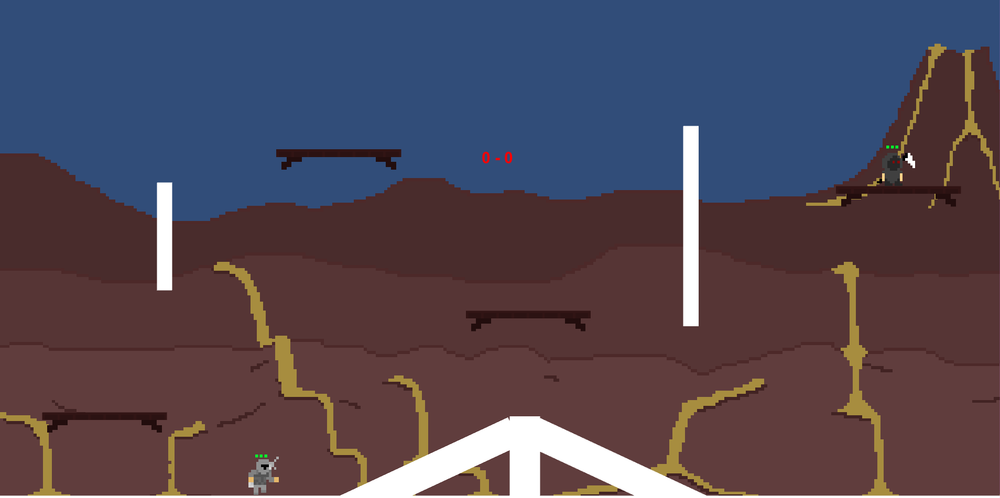

After being brought up with video games, I have always had a fascination about the processes in which they were made.
I have finished high school and am currently looking for a job. I have focus in computer science, software engineering and game development.
Through Year 11 with the help of my computer science teacher and a few keen friends, I helped found the school's software and game development club.
Students were able to come in to either get help with programming or to have a facility to create small games/programs,
mostly exposing ourselves to Unity and other game engines like: Construct 2, GameMaker and Unreal. This provided the opportunity for the members to attend industry events such as the Auckland Games Developers Meetup.
With less than a weeks notice that we were going to the Game Developers Meetup, I wanted to challenge myself to see what I could achieve within the time frame. So with the help of one of my friends, we prototyped a two player arena game where players would fight to the death. In this project I scripted how the game worked and developed the player controller with the ablilty to wall climb and dash. While the game in its form was a bit cluncky I was happy to see that people still enjoyed what we had there.
In Year 13 I had to create a program that emulated an old school type horse racing game. The program I created consisted of being able to set the amount of Gamblers and Horses there are in one game while also letting each gambler there is to choose how much they would like to bet on their desired horse. Each Horse that wins will be different everytime with a live updating leaderboard of what position each horse came/is in. There is a bug that I was unable to fix in the time frame given that caused the blinking of the horse and finish line pictures.
In Year 12 we were given the task to create a program that would calculate your VO2Max. Taking your Age, Gender, Maximum and Resting Heart Rates to give your VO2 Maximum Rating.
In Year 11 for our first proper assesment we had to create a simple 21 game made through prompts. It consisted of 2 Players that had to avoid hitting 21 and whoever reached 21 first would lose.
As a introduction into Computer Science in Year 10 we used Construct 2 to create a game. A friend and I from scratch created a top down zombie shooter where you had to progress through levels going through different types of areas such as office building, park, etc. While the friend focused on the Art, I focused on building the game itself. Although due to time restrictions we only completed one level.
Completed NCEA 1, 2 and 3